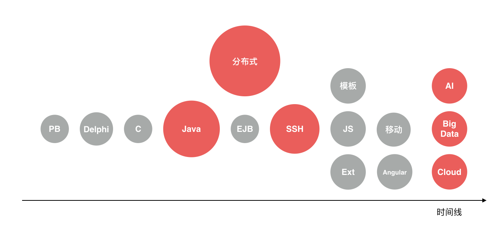
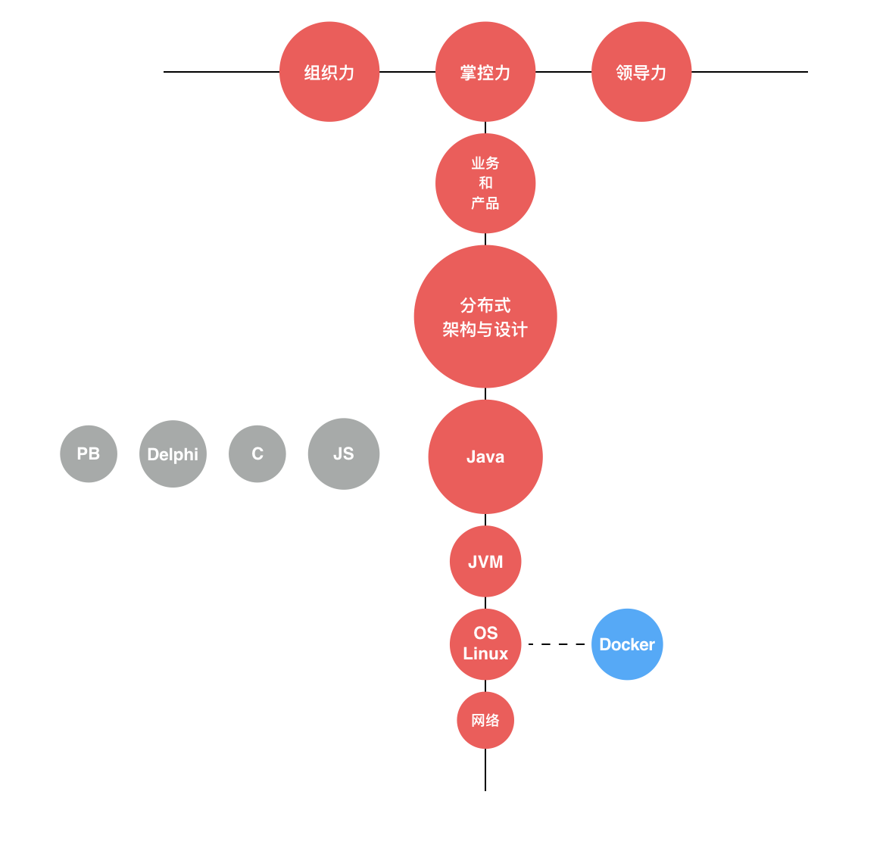
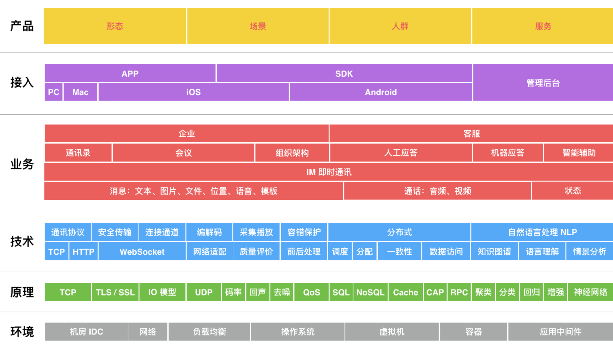

- 00 开篇词 程序行知：走在同样的路上，遇见自己的风景.md
- 01 初心：为什么成为一名程序员？.md
- 02 初惑：技术方向的选择.md
- 03 初程：带上一份技能地图.md
- 04 初感：别了校园，入了江湖.md
- 05 架构与实现：它们的连接与分界？.md
- 06 模式与框架：它们的关系与误区？.md
- 07 多维与视图：系统设计的思考维度与展现视图.md
- 08 代码与分类：工业级编程的代码分类与特征.md
- 09 粗放与精益：编程的两种思路与方式.md
- 10 炫技与克制：代码的两种味道与态度.md
- 11 三阶段进化：调试，编写与运行代码.md
- 12 Bug的空间属性：环境依赖与过敏反应.md
- 13 Bug的时间属性：周期特点与非规律性.md
- 14 Bug的反复出现：重蹈覆辙与吸取教训.md
- 15 根源：计划的愿景——仰望星空.md
- 16 方式：计划的方法——脚踏实地.md
- 17 检视：计划的可行——时间与承诺.md
- 18 评估：计划的收获——成本与收益.md
- 19 障碍：从计划到坚持，再到坚持不下去的时候.md
- 20 执行：从坚持到持续，再到形成自己的节奏.md
- 21 信息：过载与有效.md
- 22 领域：知识与体系.md
- 23 转化：能力与输出.md
- 24 并行：工作与学习.md
- 25 时间：塑造基石习惯（上）——感知与测量.md
- 26 时间：塑造基石习惯（下）——切割与构建.md
- 27 试试：一种“坏”习惯.md
- 28 提问：从技术到人生的习惯.md
- 29 偏好：个人习惯的局限与反思.md
- 30 写作：写字如编码.md
- 31 画图：一图胜千言.md
- 32 演讲：表达的技术.md
- 33 定义：阶梯与级别.md
- 34 晋升：评定与博弈.md
- 35 关系：学徒与导师.md
- 36 核心：安全与效率——工程技术的两个核心维度.md
- 37 过程：规模与协作——规模化的过程方法.md
- 38 思维：科学与系统——两类问题的两种思维解法.md
- 39 职业倦怠：如何面对？.md
- 40 局部最优：如何逃离？.md
- 41 沟通之痛：如何改变？.md
- 42 技术停滞：如何更新？.md
- 43 无法实现：困扰与反思.md
- 44 完成作品：理想与现实.md
- 45 代码评审：寄望与哀伤.md
- 46 人到中年：失业与恐惧.md
- 47 该不该去创业公司？.md
- 48 该不该接外包？.md
- 49 技术干货那么多，如何选？.md
- 50 技术分歧，如何决策？.md
- 51 技术债务，有意或无意的选择？.md
- 52 选择从众，还是唯一？.md
- 53 选择工作，还是生活？.md
- 54 侠客行：一技压身，天下行走.md
- 55 江湖路：刀剑相接，战场升级.md
- 56 御剑流：一击必杀，万剑归心.md
- 57 三维度：专业、展现与连接.md
- 58 三人行：前辈、平辈与后辈.md
- 59 三角色：程序员、技术主管与架构师.md
- 60 三视角：定位、自省与多维.md
- 61 工作之余，专业之外.md
- 62 跨越断层，突破边界.md
- 63 成长蓝图，进化跃迁.md
- 尾声 始于知，终于行.md
22 领域：知识与体系
今年年初，我学习了梁宁的《产品思维》课，其中有一篇叫《点线面体的战略选择》，我觉得特别有感触。虽然是讲产品，但假如把个人的成长当成产品演进一样来发展，会有一种异曲同工、殊途同归之感。
在我工作的经历中就曾碰到过这么一个人，他一开始做了几年开发，从前端到后端，后来又转做测试，接触的“点”倒是不少，但却没能连接起来形成自己的体系，那他个人最大的价值就局限在最后所在的“点”上了。
其实个人的成长有很多方面，但对于程序员的成长最重要的就是知识体系的构建，这其实就是一个 “点线面体” 的演进过程。
下面我会结合自己的成长路线来梳理下这个体系的建立过程。
点
进入任何一个知识领域，都是从一个点开始的。
如下图，是我从大学进入软件开发领域所接触的一系列的点，我将其从左到右按时间顺序排列。红色的部分是目前还属于我 “掌握” 与 “了解” 的领域，其他灰色的部分则是要么被时代淘汰了，要么已经被我放弃了维持与更新。

我的成长时间线上相关技术领域知识点
我入行的年代，流行的是 C/S 架构的软件开发模型。当时客户端开发三剑客是 PB（PowerBuilder）、VB（Visual Basic）和 Delphi，而我只是顺势选了其中的一两个点，然后开启了程序员生涯。
没过两年B/S 架构开始流行，并逐步取代了 C/S 架构。于我，只是因为研究生阶段学校开了一门面向对象语言课，老师用 Java 做教学语言，所以我后来就又顺势成了一名 Java 程序员。而又只是因为 Java 的生命力特别旺盛，所以也就延续至今。
早些年，前后端还没太分离时，因为项目需要，所以我又去涉猎了一些前端 JS 开发；之后移动互联网崛起，又去学习了些移动开发的东西；再之后就是 ABC 的时代（其中 A 是 AI ，人工智能；B 是 Big Data，大数据；C 是 Cloud，云计算），就又被潮流裹挟去追逐新的技术浪潮。
如今回过头再看，每一个技术点，似乎都是自己选择的，但又感觉只是一种被趋势推动的一次次无意“捡起”。有些点之间有先后的承接关系，而更多点都慢慢变成了孤点，从这片技术的星空中暗淡了下去。
在你入行后，我想你可能也会因为时代、公司或项目的原因，有很大的随机性去接触很多不同的技术点。但如果你总是这样被客观的原因驱动去随机点亮不同的 “点”，那么你终究会感到有点疲于奔命，永远追不上技术的浪潮。
线
当形成的点足够多了后，一部分点开始形成线，而另一些点则在技术趋势的演进中被自然淘汰或自己主动战略放弃。
那你到底该如何把这些零散的点串成线，形成自己的体系与方向呢？如下图，是我的一个成长 “T 线图”，它串联了如今我沉淀下来的和一些新发展的 “点”。

我个人的成长发展 “T 线图”
我从成为了一名 Java 程序员开始，在这条 “T线” 上，先向下走，专注于解决业务需求碰到的技术问题。先自然地要向下至少走一层，接触 Java 的运行平台 JVM。而又因为早期做了几年电信项目，要和很多网络设备（包括各类网元和交换机等）通信，接触网络协议编程；后来又做了即时消息（IM）领域的工作，网络这一块就又继续增强了。而网络编程依赖于操作系统提供的 I/O 模型和 API，自然绕不过 OS 这一块。
在 Java 领域走了多年以后，以前涉猎的技术点就逐步暗淡了。而再从程序员到架构师，就开始往上走，进入更纯粹的 “架构与设计” 领域，在更宽的范围和更高的维度评估技术方案，做出技术决策与权衡，设定技术演进路线。
但是，再好的技术方案，再完美的架构，如果没有承载更有意义的业务与产品形态，它们的价值和作用就体现不了。所以不可避免，再往上走时就会去了解并评估 “业务与产品”，关注目标的价值、路径的有效性与合理性。
在整个纵向的技术线上，最终汇总到顶点，会形成一种新的能力，也就是我对这条纵向线的 “掌控力”。到了这个 “点” 后，在这里可以横向发展，如图中，也就有了新的能力域：领导力和组织力。
一个个点，构成了基本的价值点，这些点串起来，就形成了更大的价值输出链条。在这条路上，你也会有一条属于自己的 “T线”，当这条线成型后，你的价值也将变得更大。
面
线的交织，将形成面。
当我试着把我最近六年多在电商客服和即时通讯领域的工作画出来后，它就织就了下面（如图所示）的这个“面”。

我近些年工作面的分层图
我从最早的聚焦于某个业务点和技术栈，逐步延伸扩展到整个面。因为 IM 这个产品本身具备很深的技术栈，而且也有足够多元化的应用场景，这样整个面就可以铺得特别宽广。这也是为什么我已经在这个面上耕耘了六年多之久。
但事实上，我并不掌握这个面上的每个点，整个团队才会分布工作在整个面上，每个个体贡献者也只会具体工作在这个面上的某个或某些点。但我们需要去认清整个面的价值体系，这样才能更好地选择和切入工作的点，创造更大的价值。
而有时候，我也了解到有些程序员的一些说法是这样的：在相对传统的行业，做偏业务的开发，技术栈相对固定且老化，难度和深度都不高，看不到发展方向，期望找到突破口。若你也出现这样的情况，那就说明你从事的业务开发，其单个技术点的价值上限较低，而选择更新、更流行的技术，你就是期望提升单个技术点的价值，但单个技术点的价值是相对有限的。
反过来，如果很难跳脱出自身环境的局限，那么也可以不局限于技术，去考虑这些传统的业务价值，从技术到业务，再上升到用户的接入触达，考虑产品的场景、形态和人群是如何去为这些用户提供的服务、产生的价值。
当你对整个业务面上的价值点掌握的更多，能抓住和把握核心的价值链条，去为更广、更大的价值负责，那么你就能克服自己的成长发展困境，找到了另外一条出路了。
同时，你也为自己织就了一张更大的领域之网。在整个面形成了一个领域，在这个面上你所能掌控的每条线就是你的体系。在这条线的 “点” 上，你解决具体问题，是做解答题；但在整个面上你选择 “线”，是做选择题。
体
体是经济体或其中的单元。
你的 “面” 附着在什么 “体” 上决定了它的价值上限。如果 “体” 在高速增长并形成趋势，你就可能获得更快的发展。
从电力时代到信息时代再到智能时代，互联网、电商、移动互联网，这些都是 “体” 的变化。今天互联网行业的软件工程师，他们面临的挑战和难度不见得比传统的机械或电力工程师更大，只不过他们所从事的 “点” 所属的 “面”，附着于一个快速崛起的 “体” 上，获得了更大的加速度。
“体” 的崛起，是时代的机遇。
总结来说，就是：在领域知识体系中，“点” 是利器，“线” 是路径，“面” 是地图；而就我们个体而言，“点” 是孤立知识点的学习掌握，而 “线” 是对这些点的连接，“面” 则构成了完整的知识体系网。
以上就是我建立知识体系并形成自己领域的思考。而在每个不同的阶段，你都可以先做到心中有图，再来画“线”，然后再在每个“点”上去努力。
© 2019 - 2023 Liangliang Lee. Powered by gin and hexo-theme-book.